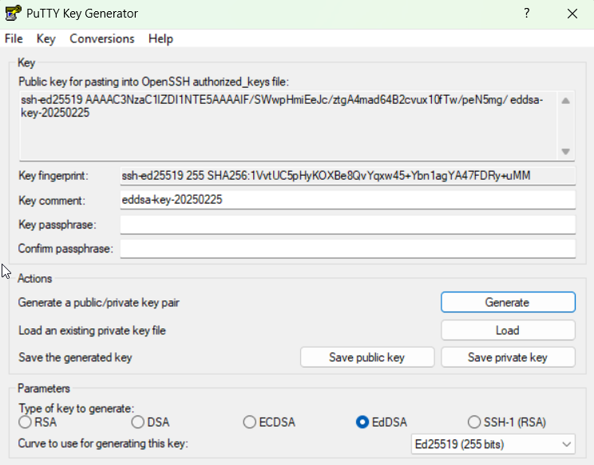
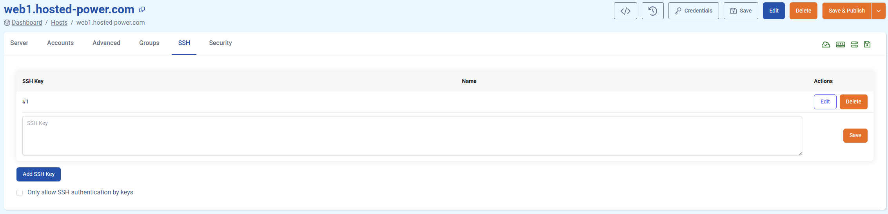

Add an SSH key to an existing server
Depending on your type of server, your method of adding SSH keys may change. In this article, we'll go over the different ways to add your SSH key to your TurboStack server (and how to create a keypair if you haven't already). Please note we recommend using ed25519 as scheme, however all our different platforms support any OpenSSH-compatible scheme.
Step 1: Generating a new SSH keypair
If you already have your SSH key you'd like to add, feel free to skip to step 1.
You only need to choose one of the methods below to generate your SSH key:
- Method 1: Using WSL, Linux, or Mac Terminal (Recommended for most users)
- Method 2: Using PuTTY Key Generator (For Windows users who prefer PuTTY)
Method 1: WSL, Linux, Mac terminal
ssh-keygen -t ed25519 -C "your-email@example.com"- The
-t ed25519flag specifies the ed25519 algorithm, which is more secure and faster than older schemes like RSA. - The
-C "your-email@example.com"flag adds a comment to help identify your key.
After running the command, you'll be prompted to:
- Choose a file location to save the key (press Enter to accept the default
~/.ssh/id_ed25519). - Set a passphrase for added security (optional but recommended).
Once generated, you should have two files:
id_ed25519– This is your private key (never share it!).id_ed25519.pub– This is your public key (this is the key you will add to your server).
To display the contents of your public key, use the following command:
cat ~/.ssh/id_ed25519.pubMethod 2: Putty Key Generator
1. Open PuTTYgen
- Download PuTTY from the official source if you don’t already have it installed.
- Open PuTTYgen (
puttygen.exe).
2. Generate an Ed25519 Key
- In the PuTTY Key Generator window, locate the Parameters section.
- Select EdDSA (Ed25519 should be the default curve).
- Click Generate and move your mouse randomly over the blank area to generate randomness.
- Once completed, PuTTYgen will display the public key at the top.

3. Save Your SSH Key Files
- Click Save private key and save it as
id_ed25519.ppk.- (Optional) Enter a passphrase for additional security.
- Click Save public key and save it as
id_ed25519.pub. - (Optional) If your server requires an OpenSSH format key, go to Conversions > Export OpenSSH Key, then save it as
id_ed25519.
Step 2: Adding your SSH key to your server
TurboStack server
- Go to your TurboStack server in the GUI.
- In the ribbon menu, click 'SSH'.
- Paste your public key into the textbox.
- Click 'Save & Publish'

If you need to add keys to multiple servers, you can use the groups functionality to streamline this process.
cPanel
-
Log into cPanel
- Navigate to your cPanel account (usually at
https://your-domain.com:2083orhttps://your-server-ip:2083). - Enter your username and password to log in.
- Navigate to your cPanel account (usually at
-
Go to the SSH Access Section
- In the cPanel Dashboard, locate the Security section.
- Click on SSH Access.
-
Import Your SSH Key
- Click Manage SSH Keys → Import Key.
- Under Public Key, paste the contents of your id_ed25519.pub file.
- (Optional) You can also upload a private key here if needed for authentication.
- (Optional) You can provide a passphrase for extra security.
- Click Import to save the key.
-
Authorize the SSH Key
- After importing, return to Manage SSH Keys.
- Find your newly added key under the Public Keys section.
- Click Manage → Authorize to enable the key for SSH access.
DirectAdmin
-
Log in to DirectAdmin
- Open DirectAdmin at
https://your-server-ip:2222orhttps://your-domain.com:2222. - Enter your admin or user credentials.
- Open DirectAdmin at
-
Navigate to the SSH Key Manager
- Go to: User Level > SSH Keys
-
Add a New SSH Key
- Click Add SSH Key.
- In the Public Key field, paste your SSH key (from
id_ed25519.pub). - Click Save.
-
Authorize the SSH Key
- After adding, ensure the key is enabled in the SSH Keys list.
- If needed, set key permissions to allow login.